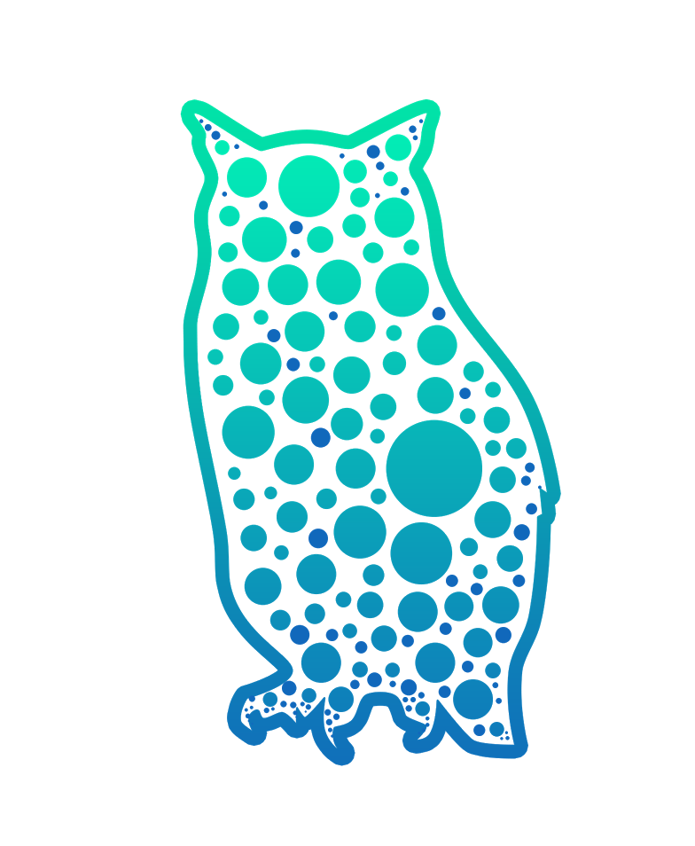

<nav class="navbar sticky-top navbar-dark bg-dark">
  <a class="navbar-brand" href="#">
    E-Series Dashboard</a>     
  <ul class="navbar-nav mr-auto">
  <li class="navbar-item">
    <a class="nav-link" routerLink="/main" routerLinkActive="active">Main</a>
  </li>
</ul>  
    <div ngbDropdown placement="bottom-right" class="d-inline-block">
        <a *ngIf="userName; else elseBlock" class="nav-link dropdown-toggle" id="dropdownBasic1" ngbDropdownToggle><font color="white">{{userName}}</font></a>
        <ng-template #elseBlock><a class="nav-link dropdown-toggle" id="dropdownBasic1" ngbDropdownToggle><font color="white">Guest</font></a></ng-template>
        <div ngbDropdownMenu aria-labelledby="dropdownBasic1">
          <button *ngIf="isAdminConnected" routerLink="/admin" class="dropdown-item">Admin Page</button>
          <button class="dropdown-item" (click)="BugReport()">Bug Report</button>
        </div>
    </div>
</nav>
<nav class="navbar fixed-bottom navbar-dark bg-dark">
  <a class="navbar-brand mx-auto"><font color="white">{{CurDate}}</font></a>
  <a class="navbar-brand">
    <ng-template #tipContent>Vols&Pools: ניצולת האחסון בווליומים (שטח אחסון המוקצה למשתמש) תקלה פה אומרת שיש ווליום עם 100% תפוסה
        Disks: דיסק תקול , לא מספיק ספיירים
        FC: תקלה בתקשורת של FC 
        (פרוטוקול תקשורת) 
        רכיב תקול  
        Hardware: חיישנים, ספקי כוח תקולים
        Mgmt: שעון לא נכון, בעיה בתקשורת הניהול (ניהול מערכת)
        </ng-template>
    </a>  
    <!-- <span matTooltip="This is the tooltip message" #tooltip="matTooltip" matTooltipPosition="above"></span> -->
    
</nav>